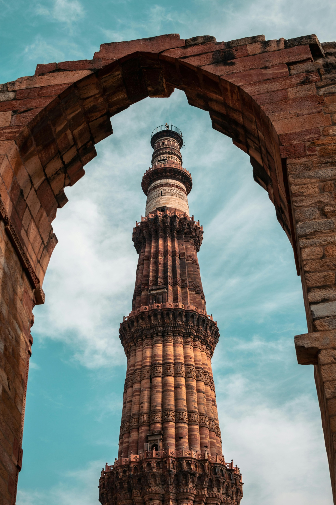
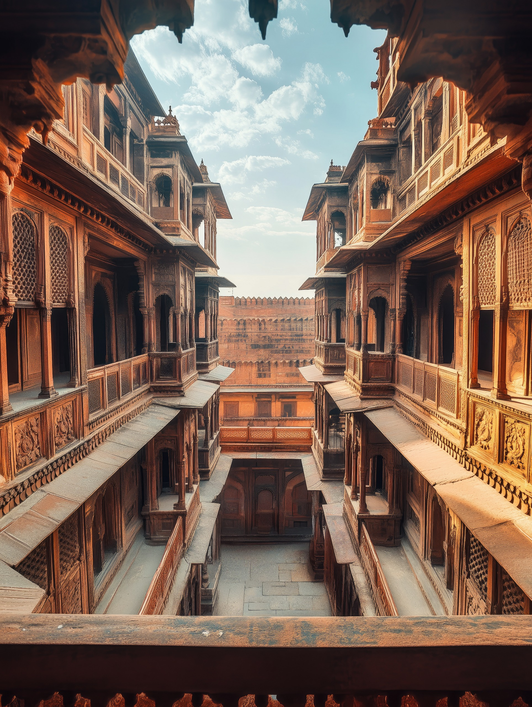

Notice
Look closely at monuments, rituals, craft, and stories that often fade into the background of daily life.
SDG 11 | Sustainable Cities and Communities
Enter a digital time archive where monuments, legends, rituals, and threatened memories are preserved through immersive technology.
The Past Meets the Future
India's cultural memory is carried by stone, song, craft, food, language, and ritual. This experience reframes heritage as alive: fragile, evolving, and ready to be rediscovered by a digital generation.
Scroll through architectural marvels, oral traditions, living culture, preservation crises, and future technologies.
Five emotional chapters

01Architectural identity, restoration, and hidden details.

02Legends, memory, and oral traditions retold cinematically.
03Living heritage across dance, craft, food, festivals, and music.
 04
04
Pollution, neglect, urban pressure, and fading practices.
 05
05
AI, AR, VR, scanning, and digital archives for preservation.
Heritage Journey
Look closely at monuments, rituals, craft, and stories that often fade into the background of daily life.
Understand the people, places, beliefs, and skills behind each tradition instead of treating heritage as decoration.
Use awareness, documentation, restoration, and responsible tourism to keep cultural memory alive.
Technology should not replace heritage. It should preserve it, amplify it, and carry it forward.